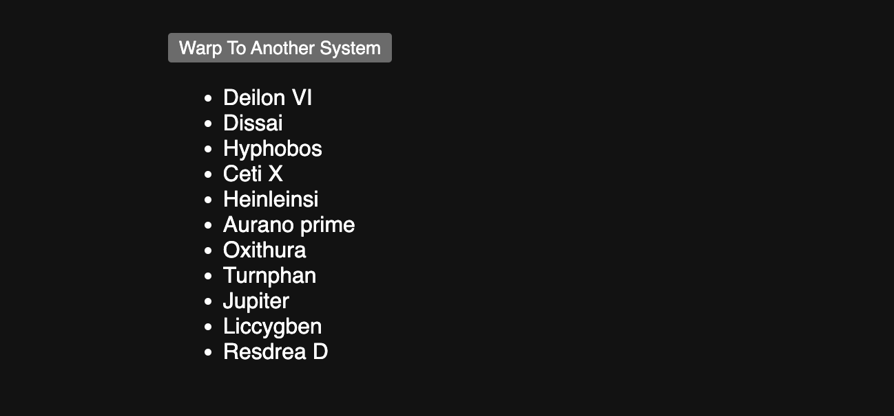
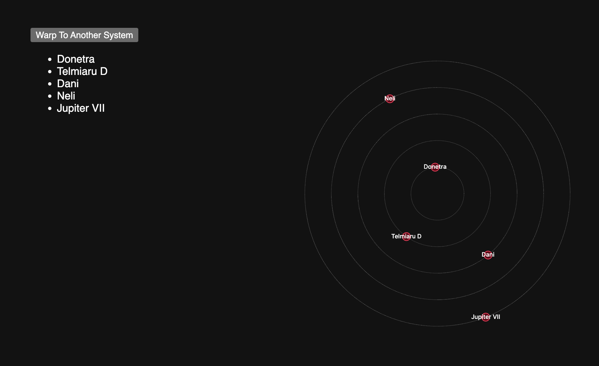

Reactivity With RxJS
Part 1: Everything In One Place
Head over here to see the code.

It’s a simple button and list of planets that gets randomly generated thanks to this NPM library.
All of the HTML and JS is on one page to make it easier to grok in an editor, and this is the core functionality:
A random number generator for the # of planets in the list:
const randomNumber = d3.randomInt(4, 13)The function we call when the button is pressed:
function updateList(list, planets) {
const items = list.selectAll('li')
.data(planets);
items.enter().append('li')
.text(d => d)
.merge(items)
.text(d => d);
items.exit().remove();
}
const list = d3.select('#the-list');The first reactive component: a button that, when pressed, will update a javascript string array with new names:
// setup a reaactive button
const button = document.querySelector('#the-button');
const buttonClickObservable = fromEvent(button, 'click');
buttonClickObservable.subscribe(event => {
const newPlanetNames = generate_celestial_monikers(randomNumber())
planetNamesSubject.next(newPlanetNames);
});The second reactive component: an actual reactive data source, just like you’d make in Observable, that will update the list of planets once it receives new data:
const planetNamesSubject = new BehaviorSubject([]);
const planetNamesObservable = planetNamesSubject.asObservable();
planetNamesObservable.subscribe(planets => {
updateList(list, planets);
});The bit that kickstarts the warping:
const newPlanetNames = generate_celestial_monikers(randomNumber())
planetNamesSubject.next(newPlanetNames)For this part of the mission, just get it running. You can use one of the servers we’ve mentioned in a previous Drop, just deploy to GH Pages, or use your usual.
Part 2
The second part of your mission is to not be a monster and break apart the JS code from the index.html into a structure like this:
├── index.html
├── list.js
├── main.js
└── styles.cssThat means figuring out what goes into main.js, what should go in list.js, and adding a script call out to main.js from index.html.
I highly suggest attempting this on your own, first. But there’s a pre-built solution for you, too.
Feel empowered to stop here and start playing with your own ideas. The next bit has some D3 in it that you aren’t writing, but you have to look at, and that causes some cognitive overload in some folks.
Part 3
This builds on part two, so “everything in a separate, organized files”.

Link to finished solution.